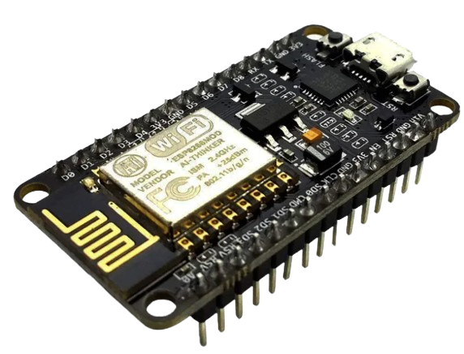

esp8266 Captive Portal
O ESPhishing é um ataque de portal cativo executado na placa de desenvolvimento NodeMCU com o microcontrolador ESP8266. É uma ferramenta de engenharia social que gera uma rede WiFi de um determinado nome, atraindo pessoas para se conectarem a ela e inserirem credenciais.

Entendendo o ESPhishing
O ESPhishing é um método eficaz de ataque cibernético que explora a confiança e o comportamento automático das pessoas ao se conectarem a redes Wi-Fi.
Ao criar uma rede Wi-Fi falsa, os atacantes podem coletar informações confidenciais, como nomes de usuário e senhas, de forma quase imperceptível.
Quando fiz meu primeiro teste tentei guardar os logs capturados dentro do próprio dispositivo, porem isto me incomodou, pois eu só teria acesso aos logs
quando eu pegasse o dispositivo levasse para um PC e fizesse todo procedimento... MT trabalho fazer isso então decidi simplificar e criar uma forma de enviar os logs
para uma página que seria hospedada no próprio dispositivo, sendo assim eu precisaria somente ligar o aparelho, entrar na página e esperar os logs começarem a aparecer
para isto usei a função sendDataToServer(String data) para enviar os logs capturados para esta página web automaticamente, para entender o funcionamento de tudo
precisamos entender primeiro sobre 5 funções/bibliotecas que seriam:
Configuração do Ponto de Acesso (Access Point): Cria e Define-se o SSID (nome da rede Wi-Fi) e a senha para o ponto de acesso.
Configuração do Servidor Web: Define-se rotas para manipular as solicitações HTTP recebidas pelo servidor web. Isso inclui a definição
de ações específicas a serem tomadas quando um cliente acessa determinadas URLs como, por exemplo, quando você tentar se conectar te redirecionar para determinada URL.
Envio de logs para o servidor local: A função sendDataToServer(String data) é responsável por enviar os logs capturados para uma página hospedada no próprio dispositivo.
Isso é feito utilizando uma conexão TCP/IP para enviar os dados por meio de uma solicitação HTTP POST.
Laço principal: O laço principal do programa verifica continuamente se há requisições DNS e HTTP pendentes para serem processadas.
A Baixo temos uma parte inicial do código:

Vemos nesta parte do código que esta sendo chamadas as paginas Web, as bibliotecas Wi-Fi, o destino IP que
neste caso estamos usando o próprio IP do dispositivo, e algumas funções citadas no texto anterior a imagem.
Agora nesta imagem a seguir já vemos a parte mais interessante ocorrendo e que irei lhes resumir o funcionamento:

Vamos simplificar:
1. **Validação e armazenamento de combinações de usuário/senha lembrando que definimos o url na 1 parte do codigo :**
- Quando alguém tenta entrar na página "/validate", o servidor faz algumas coisas:
- Ele pega o nome de usuário, a senha e a URL que a pessoa está tentando usar e os envia para a pagina /log.
- Ele anota essas informações em um arquivo de registro, como um diário, para lembrar quem tentou entrar e com quais informações.
- Em seguida, diz à pessoa que houve um erro de configuração no roteador, para tentar fazer algo engraçado. (afinal esta rede e fake e nao tem como se conectar realmente)
- Por fim, pisca a luz do LED algumas vezes e envia as informações (como nome de usuário, senha e URL) para a pagina /log.
2. **Página de registro onde fica armazenado os logs:**
- Quando alguém acessa a página "/logs", o servidor mostra a eles uma página especial:
- Nessa página, ele lista todas as tentativas anteriores de acesso, com nomes de usuário, senhas e URLs que foram usados.
- Também dá a opção de apagar todos esses registros, se a pessoa quiser.